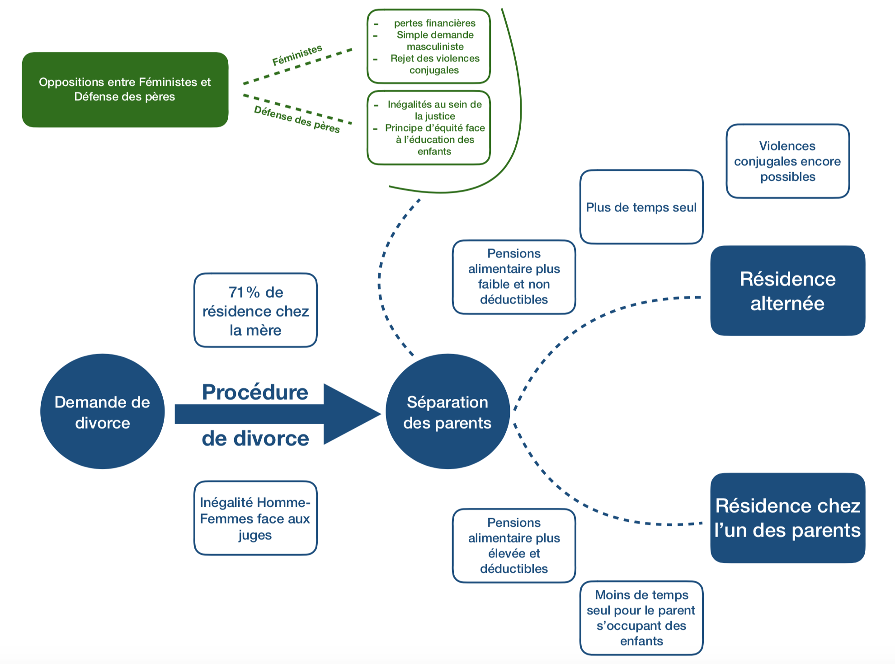

Une opposition hommes-femmes au sein de la résidence alternée
Pendant et après la procédure de divorce, des inégalités et des oppositions ont lieu entre hommes et femmes. Si nous nous intéressons d’abord aux oppositions entre les parents divorcés, nous expliciterons ensuite le débat entre les associations féministes et celles de défense des pères. Il est en effet indispensable de traiter de l'opposition médiatique entre ces différentes associations. Enfin, nous discuterons du cas important des violences conjugales.
Les oppositions au sein du couple
Les inégalités hommes-femmes
Les inégalités entre les femmes et les hommes sont encore extrêmement fortes en France aujourd’hui. Ainsi, les écarts de salaire à travail égal s’élèvent en moyenne à 24% (source), les discriminations à l’embauche sont fréquentes, notamment en termes de temps de travail : près de trois-quarts des emplois à temps partiel sont occupés par des femmes. Cette inégale représentation des femmes se retrouve au sein du monde politique : on compte 38,8% de femmes à l’Assemblée Nationale.
Cependant, il y a un domaine où ces inégalités sont totalement différentes : c’est celui des procédures de divorce, et notamment le choix de la résidence des enfants. En effet, la résidence chez la mère est prononcée par les juges aux affaires familiales dans 71% des cas (d’après un rapport du Ministère de la justice de 2012[38]). En particulier lorsque les deux parents ne sont pas d’accord sur le choix à faire, les enfants vont dans 63% des cas chez leur mère.
A première vue, au contraire, les procédures de divorce semblent particulièrement favorables aux mères. Ces décisions suscitent beaucoup de réactions, notamment de la part des associations de pères divorcés, et pose la question de la parole accordée à chacun des parents lors de la procédure.
En effet, d’après un entretien réalisé avec le député Philippe Latombe[42], et le rapport du Ministère de la Justice[38], la mère devra expliquer sa position, c’est-à-dire son souhait de résidence, alternée ou non. Tandis que le père devra lui apporter la preuve matérielle (par des documents divers) qu’il est capable de s’occuper de ses enfants.
Normalement la justice, elle regarde le dossier dans sa situation et elle demande à chacun d'apporter des éléments, des preuves, des deux côtés. Là, il suffit qu’un des deux dise « je ne veux pas de résidence alternée » parce qu’un des parents a un boulot trop prenant : pas besoin de prouver qu’il est prenant, en revanche, en face, il y a besoin d’attendre qu’il dépose ou pas un dossier, qu’il argumente ou pas.
Cependant, la situation tend à évoluer, notamment grâce à la sensibilisation des juges à cette question. Comme le souligne Maitre Valérie Bloch[43], avocate spécialisée dans le droit des femmes et de la famille, les juges accordent de plus en plus de droits aux pères, notamment dans les régions où l’on trouve un taux de divorce important. Ainsi, les juges privilégient à présent un droit de visite élargi, qui correspond pour l’autre parent à avoir ses enfants un week-end sur deux, mais aussi une nuit par semaine, du mardi soir au mercredi soir par exemple.
Le père qui ne voit son enfant que tous les 15 jours, ce n’est plus le cas. Tous les pères qui le demandent on un droit de visite élargi. Cela correspond à un week-end toutes les deux semaines et une ou deux fois par semaine. Aucun juge ne refuse le droit de visite et d’hébergement élargis.
Les inégalités financières
Une autre question majeure lors d’une procédure de divorce est celle des pensions alimentaires.[52]
Les articles 205 à 207 du code civil prévoient une obligation alimentaire réciproque d’une part entre ascendants et descendants et d’autre part entre gendre ou belle-fille et beaux-parents. Ainsi, les parents en ligne directe se doivent les aliments, de façon réciproque, sans limitation de degré. La notion traditionnelle d’aliments s'entend au sens de l’article 208 du code civil comme tout ce qui est nécessaire à la vie (nourriture, logement, frais médicaux). Elle peut couvrir également les frais occasionnés par l’éducation des enfants, selon leur âge.
La question des pensions alimentaires recouvre deux réalités : celle du montant à verser, et celle des impôts liés à cette pension. Là encore, le sujet de la résidence alternée vient poser problème, notamment par le traitement différent qu’il fait sur les pensions par rapport à une résidence des enfants chez l’un des deux parents.
Il faut souligner que le versement de pensions alimentaire s’accompagne d’une déduction de ce montant de la base imposable. En cas de résidence alternée, cette déduction n’a plus lieu.
On peut résumer la situation à l’aide du tableau suivant :
Pensions alimentaires en fonction des résidences
| Résidence usuelle | Résidence alternée | |
|---|---|---|
| Pension alimentaire | Oui | Non |
| Déduction de cette pension sur ses impôts | Oui | Non |
Source: impot.gouv
On voit déjà un des premiers problèmes dans le cas d’une résidence alternée qui est celui de la non-déduction pour les impôts.
Si vous avez des enfants mineurs dont la charge est partagée avec l'autre parent, dans le cadre de la résidence alternée, […], vous ne pouvez déduire aucune pension alimentaire pour l’entretien de vos enfants.
Au-delà de la non déduction des impôts, le montant des pensions varie. Elles se calculent ainsi: Pension = Nombre d’enfant x (Revenu - 545E) x C
avec C, qui est un coefficient lié à la situation des enfants. Par exemple, il s’élève à 9% pour un enfant en résidence alternée, et à 18% pour un enfant vivant seulement chez l’un de ses deux parents. Ainsi, on trouve ici une disparité économique importante entre la résidence alternée et la résidence chez l’un des deux parents.
Ces différences de valeurs sur les pensions peuvent poser la question d’une possible « valeur monétaire de l’enfant ». En effet, une des critiques de la résidence alternée est qu’elle ferait perdre de l’argent aux femmes (à cause du calcul des pensions ci-dessus). Or, la pension alimentaire vise à contribuer à l’éducation de l’enfant, à son mode de vie. Ainsi, cette différence de pension alimentaire fixe une valeur monétaire à l’enfant.
La résidence alternée est donc un choix lourd financièrement (il faut aussi prendre en compte la nécessité d’avoir deux logements de taille équivalente, des affaires en double), mais qui demande un certain nombre d’autres conditions : que les logements des deux parents ne soient pas trop distants par exemple.

On peut ainsi voir sur le graphique suivant (rapport du Ministère de la Justice - 2012 [38]) que le taux de résidence alternée augmente de façon nette avec les revenus des parents. Les inégalités de revenus nuisent donc à la possibilité de choix de résidence (et ce notamment à cause de la part majeure du logement dans le revenu).
L’évolution de la vie des parents après la séparation
La résidence des enfants chez l’un des deux parents provoque irrémédiablement une inégalité du temps de présence chez l’autre parent, par rapport à une résidence alternée. Mais cette inégalité apparaît aussi en sens inverse : l’un des deux parents va nécessairement se retrouver sans enfants à charge (majoritairement le père). Ainsi, ce temps supplémentaire et cette absence d’enfants au domicile permet au père divorcé de rencontrer quelqu'un d’autre plus facilement, puis de « refaire sa vie ».
Comme le soulignent Maître Bloch[43] et Maître Muller[41] (lui-même en procédure de divorce), la résidence alternée, en permettant à chacun des deux parents d’avoir une vie « seul » une semaine sur deux, permet d’équilibrer la situation précédente.
Les oppositions entre les associations
À travers cette opposition dans le couple s’amorce une opposition entre homme et femme. Cette opposition des sexes est amplifiée par l'omniprésence dans le débat public des associations féministes et des associations de défense des pères.
Depuis les débats en hémicycle autour de la Loi Latombe (Voir la vidéo à l'assemblée nationale[58]), de nombreuses associations se sont de nouveau exprimées sur la résidence alternée. Ce débat n’est pas récent : Depuis 2002 et la nouvelle Loi Famille[46], la résidence alternée est le sujet d’importants débats parmi différentes associations.
Parmi les arguments cités contre la résidence alternée par les associations féministes, on trouve :
- Un rejet de l’intérêt supérieur de l’enfant, car la résidence alternée n’est pas toujours la bonne solution pour le développement des enfants.
- Une perte financière pour les femmes par le biais de la transformation des pensions alimentaires.
- Un rejet des mécanismes (multiples) des violences faites aux femmes.
- Une demande "masculiniste" qui vise à rendre le père plus puissant.
Aujourd’hui, les critiques de la résidence alternée portent sur l’aspect financier, mais aussi sur le fait qu’elle permette à la relation de continuer, même après le divorce : un père peut alors continuer à voir son ex-femme de façon très régulière. Cependant, d’après Maitre Bloch[43], cet argument n’est pas valable et rien ne change par rapport à une résidence chez l’un des deux parents.
Même si vous ne voyez l’autre que toutes les deux semaines, on peut avoir une mauvaise influence, et encore plus via les téléphones qui sont maintenant omniprésents quelque soit l’âge des enfants. La Résidence Alternée ne changera rien à l’influence d’un des parents sur l’autre. Elle touche finalement plus à la stabilité des enfants qu’à celle des parents.
Du côté des associations de pères divorcés, la résidence alternée représente depuis longtemps un enjeu majeur. Tous sont pour une plus grand part de résidence alternée dans les décisions des juges aux affaires familiales. Leurs arguments principaux sont les suivants (ici) :
- Une inégalité entre hommes et femmes au sein même de la justice.
- Permettre aux pères de posséder des liens plus forts avec leurs enfants.
- Permettre de rendre droit aux deux parents d’élever leurs enfants selon un principe d’équité.
Ainsi, la résidence alternée cristallise un débat entre hommes et femmes, et aussi entre différentes associations. Alors que les associations féministes voient dans la résidence alternée un moyen pour le père de s’enrichir, au détriment de son ex-conjointe, les associations de pères y voient un moyen de rendre le divorce plus égalitaire entre les deux parents.
Le cas des violences conjugales lors de la procédure de divorce
Au-delà des liens qui perdurent entre les ex-conjoints, et de leur influence positive ou négative, il faut s’interroger sur le danger de violences conjugales qui pourraient alors perdurer à cause de la résidence alternée.
On a d'après le ministère de l'intérieur[56] :
Les violences conjugales en France
| Femmes tuées par leur conjoint | Femmes qui portent plainte contre leur conjoint pour violences physiques |
|---|---|
| 122 en 2015 | 14% en 2015 |
Source: Ministère de l'intérieur
Les chiffres sont particulièrement élevés et la gravité des faits est renforcée par la difficulté des femmes à briser ce tabou : 86% des femmes victimes de violences ne portent pas plainte.
En ce qui concerne les violences physiques, de nombreuses personnes ne portent pas plainte. C’est très difficile à prouver de surcroît (il y a eu une relation d’amour, on peut éprouver de la honte). Il ne faut pas négliger les violences psychologiques qui sont encore plus difficiles à prouver (liées à la société qui est devenu violente, l’objectif est d’être beau et hyper performant). Il y a beaucoup de violences psychologiques notamment à l’égard des femmes qui restent s’occuper de leurs enfants (“tu ne gagnes pas ta vie”, “tu n’y connais rien”, etc.). C’est une violence qui devient extrêmement difficile à vivre avec le temps. C’est très difficile à prouver et les femmes n’ont pas toujours la force de rentrer dans une longue procédure de divorce.
Il est du ressort du juge aux affaires familiales de déceler une telle situation, mais, dans le cas contraire, un père violent pourrait continuer à avoir une emprise forte. Le lien entre résidence alternée et violences conjugales est donc un argument majeur pour les associations féministes, et mis en avant lors des débats à l’Assemblée Nationale autour de la loi Latombe[48].
Nous sommes donc face à un point extrêmement délicat, et surtout très important de par sa gravité. La question de la résidence alternée touche donc de nombreux domaines : la place de la femme dans la société, sa sécurité, mais aussi les inégalités entre les ex-conjoints face à la garde de leurs enfants.
A retenir
